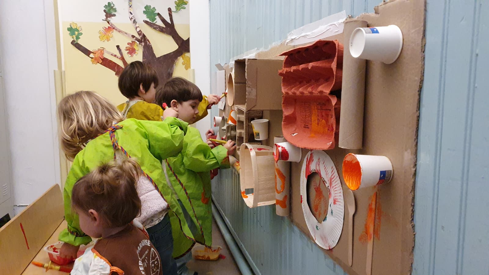

Un cocon de 120 m²
Trois espaces dédiés (conte, motricité, multi-activité) communicants, pensés pour la libre circulation et l'autonomie de l'enfant. Chaque enfant y est connu et accompagné.
Depuis 2009 · Association loi 1901
L'Atelier Berlingot est une crèche multi-accueil associative qui accueille vos enfants de 14 mois (marche acquise) à 4 ans (petite section), en demi-journée ou en journée continue, dans un espace ouvert pensé pour leur autonomie et leur éveil.

Nichée au 43 boulevard Notre Dame, dans le 6e arrondissement de Marseille, notre crèche multi-accueil associative accueille votre enfant dans un espace chaleureux, sécurisant et à taille humaine. Fondée en mai 2009 à l'initiative d'une éducatrice spécialisée assistante Montessori, la structure n'a cessé d'évoluer.
Trois espaces dédiés (conte, motricité, multi-activité) communicants, pensés pour la libre circulation et l'autonomie de l'enfant. Chaque enfant y est connu et accompagné.
Un premier agrément autorise l'accueil de 20 enfants en demi-journée, un second, modulé, celui de 11 enfants en journée continue. Nous adaptons les places aux besoins des familles.
Gérée par l'association L'Atelier Berlingot, la structure est ouverte sur son territoire et accueille près de 76 % de familles du 6e arrondissement, les autres venant des arrondissements limitrophes.
Notre projet éducatif s'appuie sur la Charte nationale de l'accueil du jeune enfant et repose sur quatre choix pédagogiques forts, qui structurent le quotidien de l'enfant.
Des espaces communicants qui favorisent l'exploration, la rencontre et la libre circulation. L'enfant circule, choisit son activité et apprend à son rythme.
Mélanger les âges est un puissant levier d'apprentissage : les enfants apprennent des plus grands, se situent, et tissent des liens au-delà des tranches d'âge.
Nous nous inspirons de Maria Montessori : du matériel adapté, une juste présence de l'adulte, l'observation, et l'enfant acteur de ses découvertes.
Au rythme des saisons : observation de la nature, jardinage, « leçons de choses » et sensibilisation au vivant dès le plus jeune âge.
Aux enfants ayant acquis la marche, à partir de 14 mois, et jusqu'à leurs 4 ans (petite section).
Accueil régulier — l'enfant est inscrit et fréquente la structure selon un contrat.
Accueil occasionnel — ponctuel, réservé la semaine même ou la suivante selon les places vacantes.
Accueil d'urgence — de dernière minute, pour un enfant non inscrit.
Accueil en demi-journée (8h30–12h et/ou 13h30–17h) ou en journée continue (8h30–17h), du lundi au vendredi. La réservation s'effectue selon vos besoins et nos disponibilités.
La demande se fait auprès de la directrice. Prenez rendez-vous par téléphone au 09 53 96 33 48. Une période de familiarisation progressive est ensuite organisée avec votre enfant, suivie d'une période d'essai d'un mois.
Sur le temps du repas (12h–13h30), 11 enfants sont accueillis en journée continue, avec une surveillance renforcée.
Fermetures annuelles : 4 semaines en été, 1 semaine entre Noël et le jour de l'An, 1 semaine durant les vacances de printemps (dates précisées à l'avance).
Notre tarification suit le barème national de la CAF : elle est calculée en fonction de vos revenus et du nombre d'enfants à charge. Voici les principes essentiels — pour un calcul précis, la directrice vous accompagne.
Le tarif est calculé à partir de vos revenus N-2 et du nombre d'enfants à charge, selon le taux d'effort défini par la CAF.
Exemple pour 1 enfant et 25 000 € de revenus annuels : ≈ 1,29 € / heure.
En dessous des ressources plancher de la CNAF, un tarif minimal s'applique (dès 0,17 €/h selon le nombre d'enfants).
Au-delà du plafond (8 500 €/mois), un tarif horaire de 5,26 € pour 1 enfant.
L'accueil régulier fait l'objet d'un contrat mensualisé. Une adhésion de 50 € par famille (valable de septembre à septembre) est demandée à l'inscription.
Ces montants sont donnés à titre indicatif. La participation de la CAF (CMG), de votre employeur ou de la ville peuvent réduire votre reste à charge. Contactez la directrice pour un devis personnalisé.
Accueil régulier : votre enfant est inscrit et fréquente la crèche selon un contrat (avec caution et mensualisation). Accueil occasionnel : ponctuel, réservé la semaine même ou la suivante selon les places, payable le jour même. Accueil d'urgence : de dernière minute, pour un enfant non inscrit.
Oui. L'accueil à l'Atelier Berlingot se fait à partir du moment où l'enfant marche, soit autour de 14 mois, et jusqu'à ses 4 ans (petite section).
Avant l'accueil définitif, une familiarisation progressive est organisée : première rencontre avec un parent, séparation progressive, temps de transition, puis inclusion dans le groupe. Elle est suivie d'une période d'essai d'un mois, conclue par un entretien avec la directrice.
Les repas (11 à 13 enfants en journée continue) sont préparés par un prestataire spécialisé en circuit court et agriculture raisonnée, et livrés chaque jour. Deux menus adaptés à l'âge sont proposés. Le sommeil se déroule dans l'atelier conte, transformé en dortoir, où chaque enfant dispose d'un couchage personnel.
La fiche de renseignements, le carnet de santé (vaccinations à jour), un certificat médical d'admission en collectivité, une attestation d'assurance responsabilité civile et, si besoin, un Projet d'Accueil Individualisé (PAI).
Oui. L'Atelier Berlingot est engagé dans une démarche inclusive et peut accueillir jusqu'à deux enfants à besoins exceptionnels, dans le cadre d'un Projet d'Accueil Individualisé (PAI) élaboré avec la famille et les partenaires médico-sociaux (CAMSP, SESSAD, CMPP…).
Une question, une disponibilité à vérifier, une visite à organiser ? Prenez rendez-vous avec la directrice, ou passez nous voir au boulevard Notre Dame.
43 boulevard Notre Dame
13006 Marseille (6e arr.)
Du lundi au vendredi · 8h30 – 17h
Fermé samedis, dimanches et jours fériés